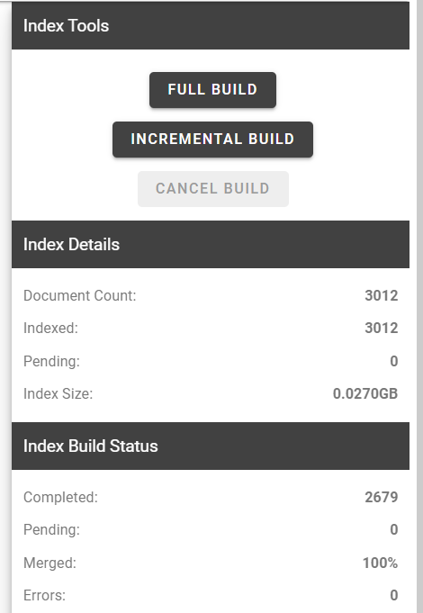
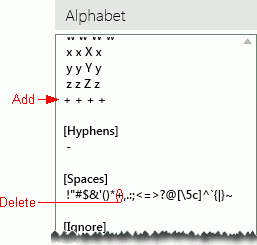

Indexes themselves are initially created as part of the import process, unless the indexing step was skipped (for example, to save time). In addition, various changes require that the index be rebuilt, such as:
-
Adding new fields to a case and importing data into them.
-
Changing the indexing option for a field from No to Yes.
-
Editing (changing the value of) fields that have the indexing option set.
-
Replacing or adding text files.
Manage a Case Search Index
To manage a case search index:
-
Open
-
Click the Case Settings tab

- Select the Index Management tab.
-
In the Index Management window, select the pencil icon to edit the index.

-
Update the options in the Index Information section as needed. Be advised that the index build time may be longer when these options are selected, but search times will typically be faster for these types of searches:

Note: The Index Name and Index Path cannot be modified. Index Name will be auto-filled as "Default dtSearch Index." The Index Path shows the full path and directory in which the index file is maintained.
-
Auto Recognize Date, Email and Credit Cards: When this option is selected, dates, email addresses, and credit-card number recognition will be used instead of simple character recognition for these items when users search for them.
- Auto Break CJK Words: For cases that may have Chinese, Japanese, or Korean words that need to be searched, selecting this option will allow you to split characters in the search without having to search for the whole word.
- Number of Indexes: The number of index files can be changed here if needed. Particularly for large and diverse data collections, it can speed index and search processing to define multiple index files.
-
-
Update the Auto Indexing Options as needed.
-
If the Auto Indexing Enabled feature is selected, you may set the following options for when the index runs:
- If you would like the Index to run a build once, select the Occurs once at option and select the time you would like the index to start building.
-
If you would like the Index to run a build at regular intervals, select the Occurs every option and adjust the following settings as necessary.
- Hour(s): determines how often the index will be built.
- Starting at: determines when Auto Indexing will begin.
- Ending at: determines when Auto Indexing will stop.
-
Alphabet: Specify how different characters are classified. If changes are made to this area, ensure that each character appears in only one of the sections. For example: if you want an ampersand, &, to be ignored, delete it in the [Spaces] section and add it to the [Ignore] section.
Section
Description
[Letters]
Searchable characters, including all alphabetic characters (upper and lower case) and digits. All letters and digits should be classified as letters (A-Z, a-z, and 0-9).
In the Alphabet list, the four entries for each letter include the original letter plus lower case, upper case, and unaccented forms of the letter.
Four entries are required for each character.
[Hyphen]
The hyphen character is considered as a searchable character, a space, or is ignored (or all three) depending on the selected Hyphen Option as described in the [END] section of this table.
Rarely, other characters might be entered in this section for the same treatment. If you do so, make sure they are removed from other sections (Spaces or Ignored).
[Spaces]
Characters entered in this section are treated as plain spaces. For example, if the period (.) is included in this section, M.D. would be indexed as two separate words, M and D.
To make any character in this area searchable, delete it from this area and add it to the [Letters] section.
For example, if you want the plus character, +, to be searchable (perhaps you need to find the company name “Green+Smith”), you would remove it from the [Spaces] section and add it as follows in the [Letters] section as shown here.

[Ignored]
Characters entered in this section are ignored. For example, if the period is ignored, the abbreviation M.D. would be indexed as a single term, MD.
[End]
Additional alphabet options
1 - Treat hyphens as spaces. Even-tempered will be indexed as two words, even and tempered.
2 - Treat hyphens as searchable characters. Even-tempered will be the indexed term.
3 - Ignore hyphens. Eventempered will be the indexed term. This is the default selection.
4 - Treat hyphens as all three. This option is rarely beneficial, as many extra words are indexed, often yielding excess and unexpected search results. When this option is selected, each hyphenated pair of words results in six words in the index.
Note: The only advantage to option 4 might be where both hyphenated and solid forms of several terms are used and need to be found. For example, a search for email would also include e-mail in the results.
-
Noise Words: To use a default list of over 100 noise words (commonly used words that should be ignored, such as in, or, of) for the index, skip this entry. Or complete the following steps to customize the list.
-
To create a custom list of stop words, enter or paste the list of words into the Noise Words text box, then click OK. Ensure only one word is on each line.
-
To modify the default list of noise words: Click Load dtSearch Defaults located above the Noise Words text box. Add words to or remove them from the list using common editing methods. Ensure only one word is on each line.
-
-
-
Click Save.